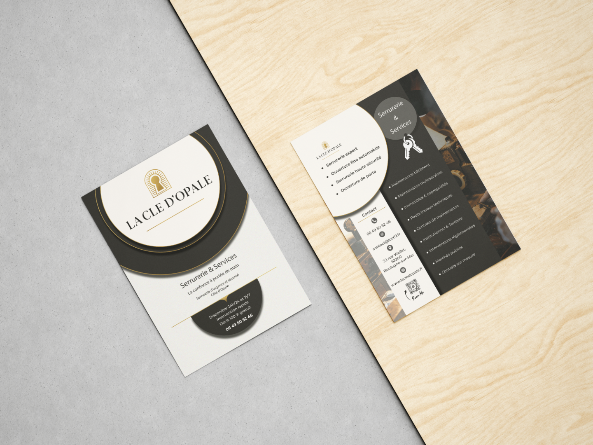
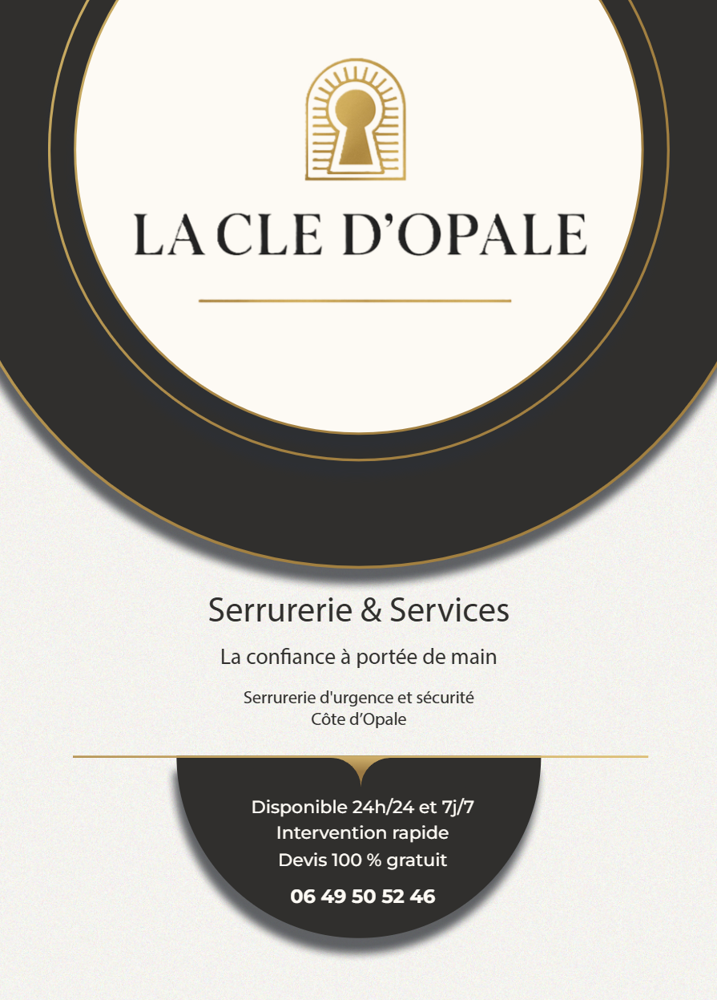
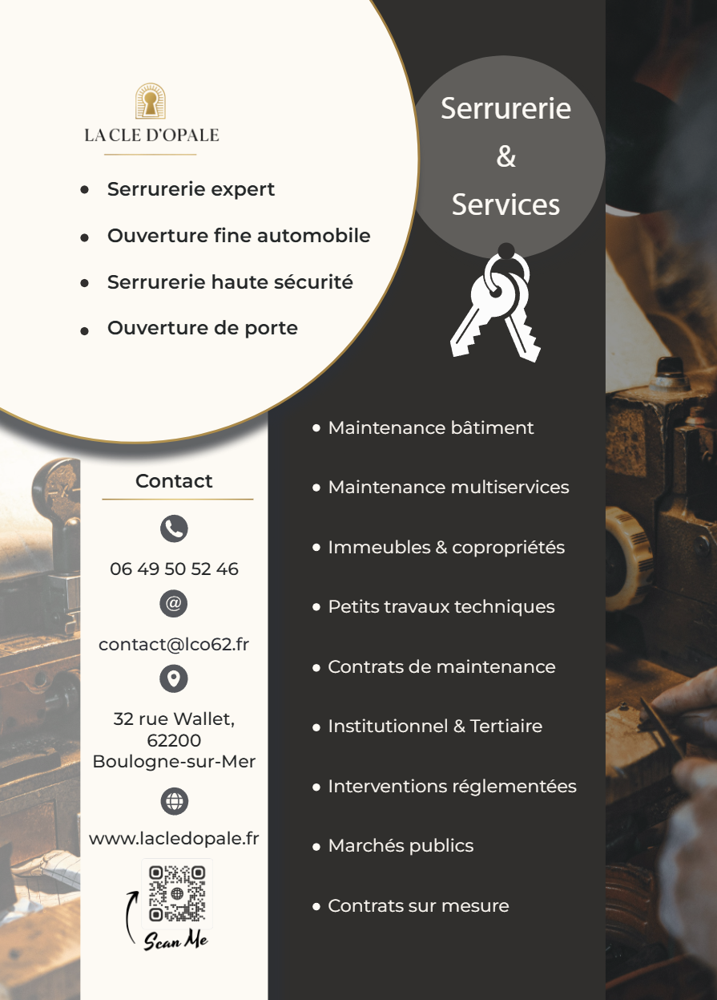

Projet scolaire
Flyer serrurerie
Création d'une identité visuelle sous forme de flyer pour une entreprise de serrurerie. Projet fictif réalisé dans un cadre scolaire.



Projet scolaire
Création d'une identité visuelle sous forme de flyer pour une entreprise de serrurerie. Projet fictif réalisé dans un cadre scolaire.


